La ZC26 BSC (Brawl Stars Championship) fue la segunda edición de la principal competición organizada por ZC ESPORTS. El torneo se disputó desde el 20 de septiembre hasta el 4 de octubre de 2026 en línea, con 24 equipos en la modalidad tres contra tres[2].
El Unorthodox se coronó campeón por primera vez en su historia tras vencer en la final a OMEN NOCTE por 3–3 en sets y 3–1 en la tanda de penales[5].
- Antecedentes
- Formato de competición y proceso de inscripción
- Organización
- Equipos participantes
- Fichas de equipos
- Fase de grupos
- Fase eliminatoria
- Cuadro de eliminatorias
- Desarrollo
- Resultados finales
- Estadísticas
- Premios y reconocimientos
- Símbolos
- Aspectos económicos
- Sanciones
- Controversias
- Clasificación general (Elo)
- Notas
- Referencias
- Enlaces externos
1. Antecedentes
La ZC26 es una organización independiente dedicada a la creación, el desarrollo y la gestión de torneos y eventos competitivos de Brawl Stars. Sus antecedentes inmediatos se encuentran en las ediciones ZC23, ZC24 y ZC25, así como en la edición inaugural de la modalidad tres contra tres de la ZC26, celebrada en agosto de 2026, cuyo título correspondió a Leviatán Esports al imponerse por 3–1 a LPR en la gran final del 8 de agosto[1].
Tras aquel evento, la organización decidió suspender temporalmente la actividad competitiva a fin de planificar una segunda entrega. El 2 de septiembre de 2026 se informó, además, de la sustitución del sistema «Camino Starr» por la mecánica «Brawler Blast», circunstancia que modificó el entorno general del juego durante la preparación del torneo[3].
2. Formato de competición y proceso de inscripción
El regreso de la competición fue anunciado oficialmente mediante el comunicado «Regresa la ZC26 Brawl Stars este mes de septiembre», en el que se confirmó la modalidad de tres contra tres, la incorporación de reglas renovadas, un equipo de moderación dedicado y un reglamento redactado en términos accesibles[2].
La inscripción se habría efectuado durante la primera quincena de septiembre de 2026 (fecha estimada)[2]. Participaron 24 equipos, distribuidos en seis grupos de cuatro integrantes, identificados con las letras A a F. Cada grupo fue identificado además con un color propio dentro de la plataforma oficial: A, B, C, D, E y F.
3. Organización
Entidad organizadora
El evento fue organizado por ZC26 BSC (Brawl Stars Championship), bajo el sello ZC ESPORTS. El contacto comercial y de soporte se canaliza mediante el correo oficial de la organización[1].
Personal acreditado
| Staff | itsZephyra, Lilith y FCSteven |
|---|---|
| Comentaristas (casters) | Goldship y Dankausa |
| Partners | MoonSheep e itsZephyra |
Horarios y plataforma
Los encuentros se disputaron en los servidores globales de Brawl Stars. Todos los horarios oficiales se expresan en la hora estándar de Sudamérica (UTC−5, hora de Perú), con conversión automática para México, Colombia, Honduras, Bolivia, Argentina, Chile y España en la plataforma oficial. El portal incorpora, asimismo, secciones de partidos, posiciones, estadísticas, ranking, salón de la fama y una tier list interactiva de equipos.
4. Equipos participantes
| Equipo | Grupo | Capitán / líder | Inscritos | Resultado final |
|---|---|---|---|---|
| Leviatán Esports | A | JulioCr36D | 7 | 3.er puesto |
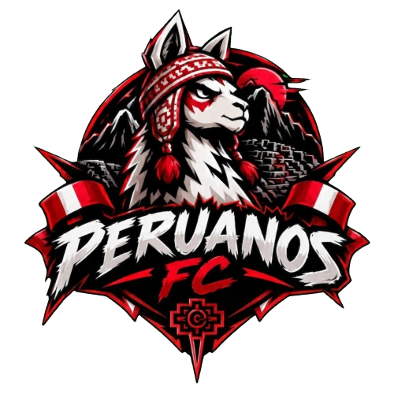 Peruanos FC | A | JuegenColette1 | 4 | Fase de grupos |
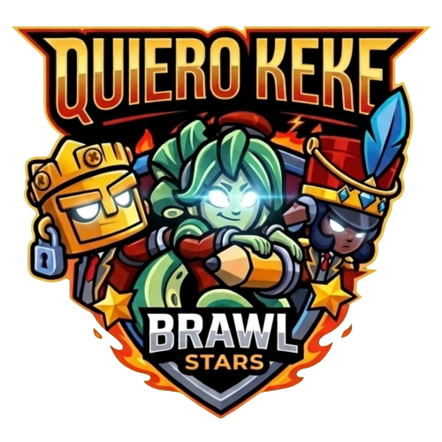 Quiero KeKe | A | Doslox | 4 | Octavos |
| POS JR | A | TK Carl | 5 | Cuartos |
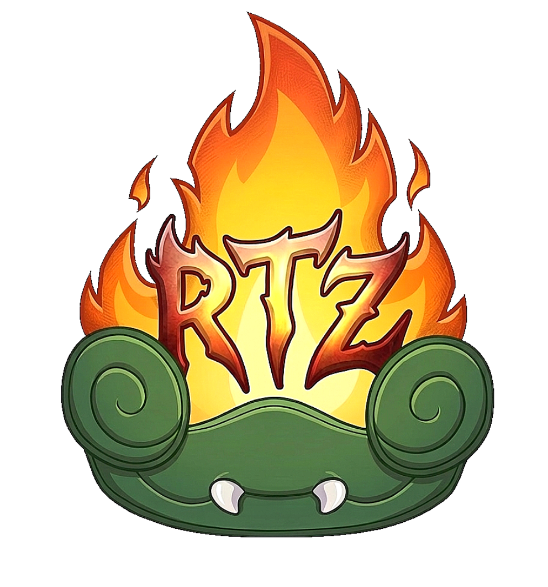 Rostizados | B | Ale's Pet | 4 | Fase de grupos |
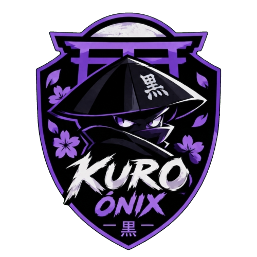 KURO ØNIX | B | sjoacedbamypasa | 3 | Octavos |
| POS | B | PosiLegend966P | 5 | Fase de grupos |
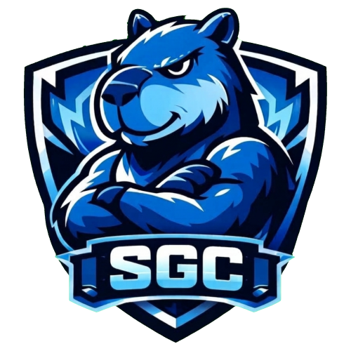 SGC | B | CESAR | 3 | Cuartos |
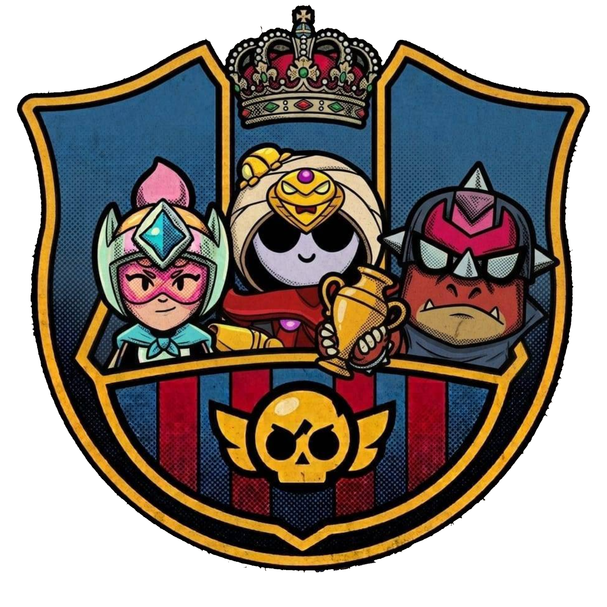 LPE | C | Steve | 3 | Cuartos |
| Phoenix | C | Amberchu01 | 5 | Octavos |
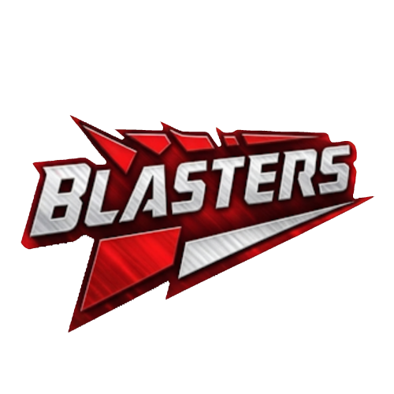 BLASTERS | C | Diego | 3 | Octavos |
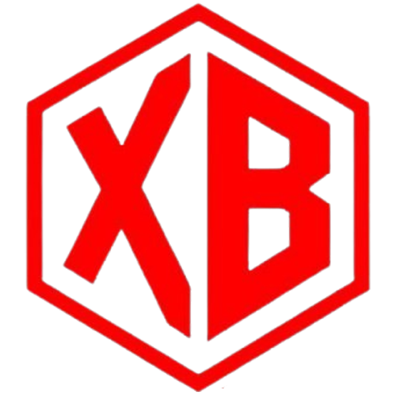 XBlood | C | Relaxx | 6 | Fase de grupos |
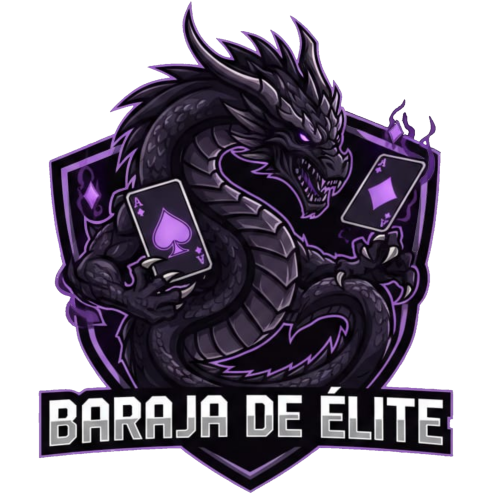 Baraja de Elite | D | Heritage | 3 | Fase de grupos |
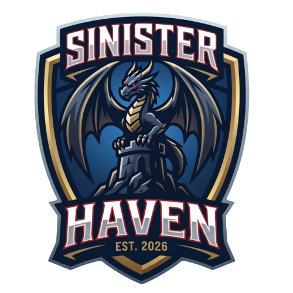 Sinister Haven | D | Isakiu | 4 | Fase de grupos |
| GTA | D | Adri | 4 | 4.º puesto |
| Unorthodox | D | robertbv | 6 | Campeón |
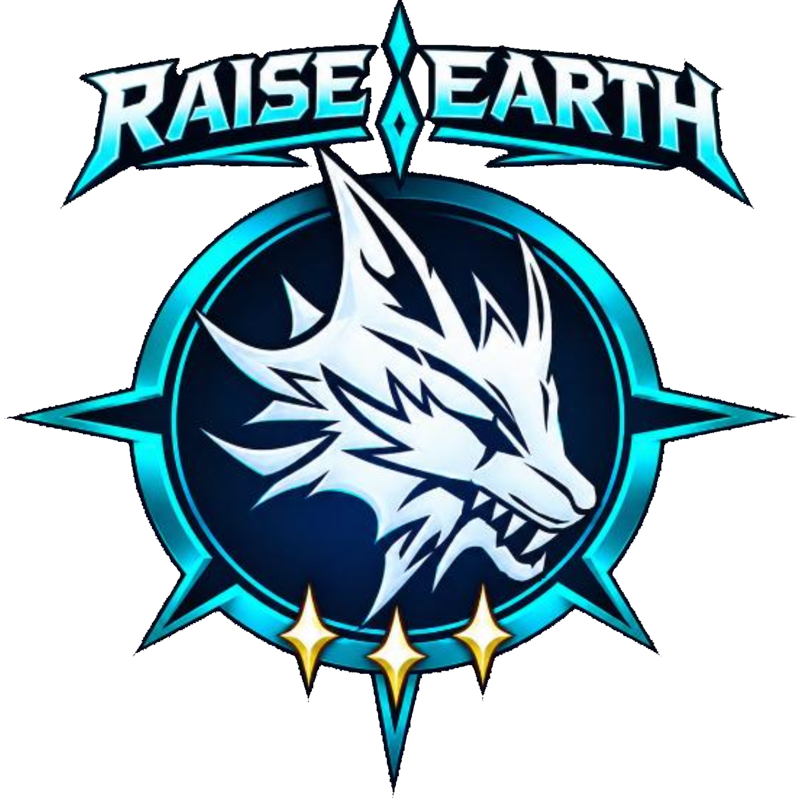 RAISE EARTH | E | F nero | 7 | Octavos |
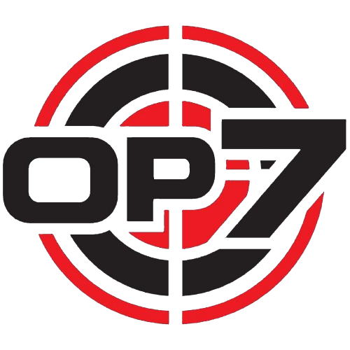 op7 | E | Naori | 7 | Cuartos |
| SYNOX GAMING | E | abelldx | 6 | Octavos |
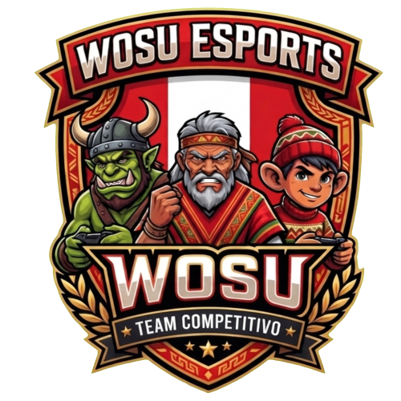 Wosu Esport | E | Blaxxyy | 4 | Fase de grupos |
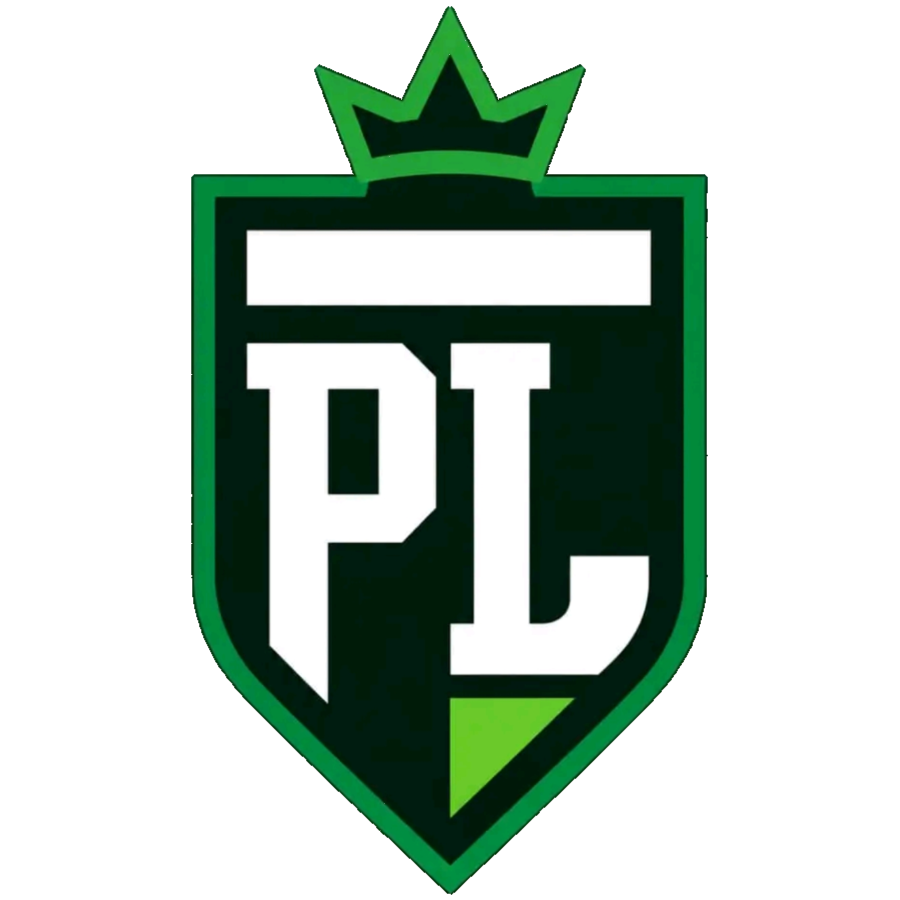 Pro Legends | F | OwnerOnYT | 3 | Fase de grupos |
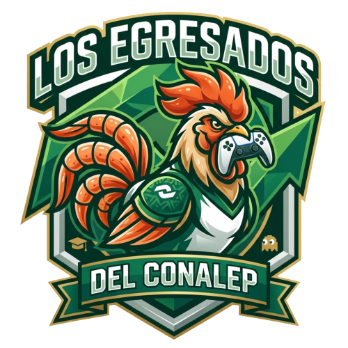 Egresados Del Conalep | F | new_faxtory | 4 | Octavos |
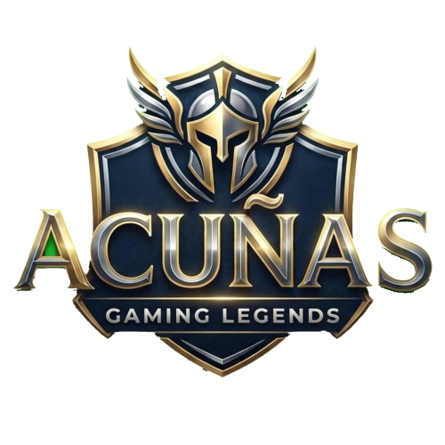 Acuñas | F | RoyZtrike | 5 | Octavos |
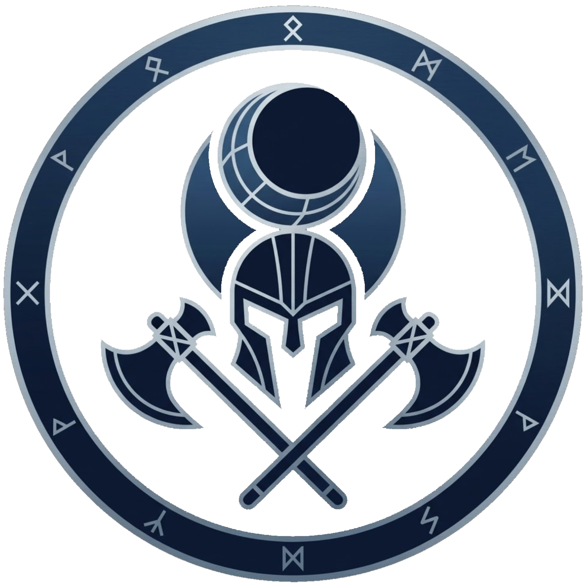 OMEN NOCTE | F | Ovied7 | 6 | Subcampeón |
5. Fichas de equipos
Cada equipo participante dispone de una ficha propia con datos generales, plantel, resultados, estadísticas y logros. Para consultarla puede utilizarse el menú de tres líneas de la esquina superior izquierda, el buscador o el siguiente índice; la ficha se abre en una ventana independiente.
6. Fase de grupos
Los 24 equipos fueron divididos en seis grupos de cuatro, con sistema de todos contra todos a una vuelta (tres jornadas por equipo). Se otorgaron 3 puntos por victoria, 1 por empate y 0 por derrota. Los desempates se resolvieron por diferencia de sets (DS), sets a favor (SF) y orden de sorteo. Clasificaron a octavos de final los dos primeros de cada grupo y los cuatro mejores terceros[3]. La fase se disputó del 20 al 25 de septiembre de 2026.
Clasificado como primero o segundo Clasificado como mejor tercero
Grupo A
| Pos. | Equipo | Pts. | PJ | PG | PE | PP | SF | SC | DS |
|---|---|---|---|---|---|---|---|---|---|
| 1 | Quiero KeKe | 9 | 3 | 3 | 0 | 0 | 9 | 1 | +8 |
| 2 | Leviatán Esports | 4 | 3 | 1 | 1 | 1 | 6 | 5 | +1 |
| 3 | POS JR | 2 | 3 | 0 | 2 | 1 | 2 | 5 | -3 |
| 4 | Peruanos FC | 1 | 3 | 0 | 1 | 2 | 0 | 6 | -6 |
| Fecha | Hora (UTC−5) | Encuentro | ||
|---|---|---|---|---|
| Dom 20 sep. | 5:00 p.m. | Leviatán Esports | 3–0 | Peruanos FC |
| Lun 21 sep. | 5:00 p.m. | Quiero KeKe | 3–0 | POS JR |
| Mar 22 sep. | 5:00 p.m. | Leviatán Esports | 1–3 | Quiero KeKe |
| Mié 23 sep. | 5:45 p.m. | POS JR | 0–0 | Peruanos FC (W.O. de ambos equipos) |
| Jue 24 sep. | 7:25 p.m. | Leviatán Esports | 2–2 | POS JR |
| Vie 25 sep. | 5:00 p.m. | Quiero KeKe | 3–0 | Peruanos FC (W.O. Peruanos FC) |
Grupo B
| Pos. | Equipo | Pts. | PJ | PG | PE | PP | SF | SC | DS |
|---|---|---|---|---|---|---|---|---|---|
| 1 | SGC | 9 | 3 | 3 | 0 | 0 | 8 | 1 | +7 |
| 2 | KURO ØNIX | 3 | 3 | 1 | 0 | 2 | 4 | 5 | -1 |
| 3 | Rostizados | 3 | 3 | 1 | 0 | 2 | 4 | 6 | -2 |
| 4 | POS | 3 | 3 | 1 | 0 | 2 | 3 | 7 | -4 |
| Fecha | Hora (UTC−5) | Encuentro | ||
|---|---|---|---|---|
| Dom 20 sep. | 5:35 p.m. | Rostizados | 0–3 | KURO ØNIX (W.O. Rostizados) |
| Lun 21 sep. | 9:10 p.m. | POS | 0–3 | SGC |
| Mar 22 sep. | 5:35 p.m. | Rostizados | 1–3 | SGC |
| Mié 23 sep. | 8:30 p.m. | KURO ØNIX | 1–3 | POS |
| Jue 24 sep. | 5:40 p.m. | Rostizados | 3–0 | POS |
| Vie 25 sep. | 5:35 p.m. | KURO ØNIX | 0–2 | SGC |
Grupo C
| Pos. | Equipo | Pts. | PJ | PG | PE | PP | SF | SC | DS |
|---|---|---|---|---|---|---|---|---|---|
| 1 | BLASTERS | 7 | 3 | 2 | 1 | 0 | 6 | 0 | +6 |
| 2 | LPE | 6 | 3 | 2 | 0 | 1 | 5 | 3 | +2 |
| 3 | Phoenix | 2 | 3 | 0 | 2 | 1 | 0 | 2 | -2 |
| 4 | XBlood | 1 | 3 | 0 | 1 | 2 | 0 | 6 | -6 |
| Fecha | Hora (UTC−5) | Encuentro | ||
|---|---|---|---|---|
| Dom 20 sep. | 6:10 p.m. | LPE | 2–0 | Phoenix |
| Lun 21 sep. | 6:10 p.m. | BLASTERS | 3–0 | XBlood (W.O. XBlood) |
| Mar 22 sep. | 6:10 p.m. | LPE | 3–0 | XBlood (W.O. XBlood) |
| Mié 23 sep. | 7:10 p.m. | Phoenix | 0–0 | BLASTERS (W.O. de ambos equipos) |
| Jue 24 sep. | 8:45 p.m. | LPE | 0–3 | BLASTERS |
| Vie 25 sep. | 9:45 p.m. | Phoenix | 0–0 | XBlood (W.O. de ambos equipos) |
Grupo D
| Pos. | Equipo | Pts. | PJ | PG | PE | PP | SF | SC | DS |
|---|---|---|---|---|---|---|---|---|---|
| 1 | Unorthodox | 9 | 3 | 3 | 0 | 0 | 9 | 0 | +9 |
| 2 | GTA | 6 | 3 | 2 | 0 | 1 | 6 | 3 | +3 |
| 3 | Sinister Haven | 3 | 3 | 1 | 0 | 2 | 2 | 6 | -4 |
| 4 | Baraja de Elite | 0 | 3 | 0 | 0 | 3 | 0 | 8 | -8 |
| Fecha | Hora (UTC−5) | Encuentro | ||
|---|---|---|---|---|
| Dom 20 sep. | 7:10 p.m. | Baraja de Elite | 0–2 | Sinister Haven |
| Lun 21 sep. | 7:10 p.m. | GTA | 0–3 | Unorthodox |
| Mar 22 sep. | 7:10 p.m. | Unorthodox | 3–0 | Baraja de Elite (W.O. Baraja de Elite) |
| Mié 23 sep. | 7:45 p.m. | GTA | 3–0 | Sinister Haven |
| Jue 24 sep. | 7:10 p.m. | GTA | 3–0 | Baraja de Elite |
| Vie 25 sep. | 7:10 p.m. | Unorthodox | 3–0 | Sinister Haven (W.O. Sinister Haven) |
Grupo E
| Pos. | Equipo | Pts. | PJ | PG | PE | PP | SF | SC | DS |
|---|---|---|---|---|---|---|---|---|---|
| 1 | op7 | 7 | 3 | 2 | 1 | 0 | 8 | 2 | +6 |
| 2 | SYNOX GAMING | 4 | 3 | 1 | 1 | 1 | 5 | 5 | +0 |
| 3 | RAISE EARTH | 3 | 3 | 1 | 0 | 2 | 4 | 6 | -2 |
| 4 | Wosu Esport | 3 | 3 | 1 | 0 | 2 | 3 | 7 | -4 |
| Fecha | Hora (UTC−5) | Encuentro | ||
|---|---|---|---|---|
| Dom 20 sep. | 8:00 p.m. | RAISE EARTH | 0–3 | op7 |
| Lun 21 sep. | 8:00 p.m. | SYNOX GAMING | 3–0 | Wosu Esport |
| Mar 22 sep. | 8:00 p.m. | RAISE EARTH | 1–3 | Wosu Esport |
| Mié 23 sep. | 8:35 p.m. | SYNOX GAMING | 2–2 | op7 |
| Jue 24 sep. | 8:00 p.m. | RAISE EARTH | 3–0 | SYNOX GAMING |
| Vie 25 sep. | 8:00 p.m. | Wosu Esport | 0–3 | op7 (W.O. Wosu Esport) |
Grupo F
| Pos. | Equipo | Pts. | PJ | PG | PE | PP | SF | SC | DS |
|---|---|---|---|---|---|---|---|---|---|
| 1 | OMEN NOCTE | 9 | 3 | 3 | 0 | 0 | 9 | 0 | +9 |
| 2 | Egresados Del Conalep | 4 | 3 | 1 | 1 | 1 | 5 | 5 | +0 |
| 3 | Acuñas | 4 | 3 | 1 | 1 | 1 | 5 | 6 | -1 |
| 4 | Pro Legends | 0 | 3 | 0 | 0 | 3 | 1 | 9 | -8 |
| Fecha | Hora (UTC−5) | Encuentro | ||
|---|---|---|---|---|
| Dom 20 sep. | 8:35 p.m. | Pro Legends | 0–3 | Egresados Del Conalep |
| Lun 21 sep. | 8:35 p.m. | Acuñas | 0–3 | OMEN NOCTE |
| Mar 22 sep. | 8:35 p.m. | Pro Legends | 0–3 | OMEN NOCTE |
| Mié 23 sep. | 8:00 p.m. | Acuñas | 2–2 | Egresados Del Conalep |
| Jue 24 sep. | 5:35 p.m. | Acuñas | 3–1 | Pro Legends |
| Vie 25 sep. | 8:35 p.m. | Egresados Del Conalep | 0–3 | OMEN NOCTE |
Pts.: puntos; PJ: partidos jugados; PG/PE/PP: ganados, empatados, perdidos; SF/SC: sets a favor/en contra; DS: diferencia de sets. W.O.: incomparecencia, sancionada con derrota por 3–0 para el equipo ausente.
7. Fase eliminatoria
La fase eliminatoria se disputó entre el 28 de septiembre y el 4 de octubre de 2026 mediante eliminación directa a partido único (serie), con octavos de final, cuartos de final, semifinales, partido por el tercer puesto y gran final. Se aplicó el sistema de baneos globales (dos por equipo).
| Ronda | Fecha | Hora (UTC−5) | Encuentro | ||
|---|---|---|---|---|---|
| Octavos | 28 sep | 6:30 p.m. | BLASTERS | 2–3 | op7 |
| Octavos | 28 sep | 7:15 p.m. | GTA | 3–0 | RAISE EARTH |
| Octavos | 28 sep | 8:00 p.m. | SYNOX GAMING | 0–3 | SGC |
| Octavos | 28 sep | 8:45 p.m. | Unorthodox | 3–0 | Quiero KeKe |
| Octavos | 29 sep | 7:30 p.m. | Leviatán Esports | 3–0 | Egresados Del Conalep |
| Octavos | 29 sep | 8:15 p.m. | Phoenix | 0–3 | POS JR |
| Octavos | 29 sep | 9:00 p.m. | LPE | 3–1 | Acuñas |
| Octavos | 29 sep | 9:45 p.m. | OMEN NOCTE | 4–2 | KURO ØNIX |
| Cuartos | 30 sep | 7:30 p.m. | op7 | 0–1 | GTA |
| Cuartos | 30 sep | 8:15 p.m. | SGC | 2–4 | Unorthodox |
| Cuartos | 1 oct | 8:15 p.m. | LPE | 0–3 | OMEN NOCTE |
| Cuartos | 1 oct | 9:30 p.m. | Leviatán Esports | 3–0 | POS JR |
| Semifinal | 2 oct | 10:00 p.m. | GTA | 2–4 | Unorthodox |
| Semifinal | 2 oct | 11:00 p.m. | Leviatán Esports | 0–3 | OMEN NOCTE |
| Tercer puesto | 3 oct | 5:10 p.m. | Leviatán Esports | 4–2 | GTA |
| Gran final | 4 oct | 5:20 p.m. | Unorthodox | 3–3 (pen. 3–1) | OMEN NOCTE |
8. Cuadro de eliminatorias
Cuadro de desarrollo de la fase final (el ganador de cada cruce figura resaltado; entre paréntesis, penales):
9. Desarrollo
Fase de grupos (20–25 de septiembre)
La competición se inició el domingo 20 de septiembre con el debut de Leviatán Esports, vigente campeón de la edición de agosto. En el Grupo A, Quiero KeKe terminó invicto con 9 puntos y relegó a Leviatán al segundo puesto. SGC (B), Unorthodox (D) y OMEN NOCTE (F) se impusieron en todos sus encuentros, mientras que BLASTERS (C) y op7 (E) lideraron sus respectivos grupos con 7 puntos. Se registraron diez incomparecencias, entre ellas tres dobles (Phoenix–XBlood, Phoenix–BLASTERS y POS JR–Peruanos FC)[4].
Octavos de final (28–29 de septiembre)
El 27 de septiembre se comunicaron las normas de la eliminatoria, entre ellas el sistema de baneos globales (dos por equipo)[4]. Fueron sorpresas la eliminación de Quiero KeKe, líder del Grupo A, ante Unorthodox (0–3), y el triunfo de op7 sobre BLASTERS (3–2).
Cuartos de final (30 de septiembre–1 de octubre)
Unorthodox superó a SGC (4–2), GTA a op7 (1–0), OMEN NOCTE a LPE (3–0) y Leviatán a POS JR (3–0).
Semifinales y tercer puesto (2–3 de octubre)
Unorthodox derrotó a GTA (4–2) y OMEN NOCTE a Leviatán (3–0). El 3 de octubre, Leviatán Esports se adjudicó el tercer puesto al vencer a GTA por 4–2.
Gran final (4 de octubre)
La final enfrentó a Unorthodox y OMEN NOCTE a las 5:20 p.m. (UTC−5). La serie concluyó 3–3 en sets, por lo que se definió en tanda de penales, donde Unorthodox se impuso por 3–1 y se proclamó campeón[5]. Una «Finalísima» prevista para el 5 de octubre figura como cancelada y no se disputó.
10. Resultados finales
Clasificación final
| Puesto | Equipo |
|---|---|
| 1.º | Unorthodox |
| 2.º | OMEN NOCTE |
| 3.º | Leviatán Esports |
| 4.º | GTA |
Detalle de la gran final
| Estadística | Unorthodox | OMEN NOCTE |
|---|---|---|
| Sets | 3 | 3 |
| Penales | 3 | 1 |
| Eliminaciones | 45 | 72 |
| Daño por segundo | 118,6 | 104,3 |
| Asistencias | 2 | 3 |
| Faltas | 7 | 3 |
| Tarjetas amarillas / rojas | 1 / 0 | 0 / 0 |
| Baneos globales | Wendy, Amber | Nori, Edgar |
11. Estadísticas
- Equipos: 24, en 6 grupos.
- Partidos disputados (series): 52 (36 en grupos y 16 en eliminatoria).
- Sets en eliminatoria: 68.
- Incomparecencias (W.O.): 10 en la fase de grupos.
- Tarjetas: 36 amarillas y 5 rojas, según el registro oficial.
- Mayor goleada: varias victorias por 3–0 en grupos y eliminatoria, además de una resolución por penales en la final.
- Equipo más efectivo en grupos: Unorthodox y OMEN NOCTE (9 puntos, 9 sets a favor y ninguno en contra).
Los datos individuales, como los jugadores estelares por mapa, se consignan en el portal oficial; la organización advierte que no se infiere información cuando no existe respaldo suficiente.
12. Premios y reconocimientos
| Premio | Galardonado | Detalle |
|---|---|---|
| Miseryoung (Unorthodox) | Mejor jugador del torneo | |
| Mokka (OMEN NOCTE) | 9 Estelares, máxima cifra del torneo | |
| Unorthodox | 3–3 (pen. 3–1) ante OMEN NOCTE | |
| OMEN NOCTE | Finalista |
Integrantes de Unorthodox: robertbv (capitán), Lie in April!, Miseryoung, Zeno, patch y Rodrixx.
13. Símbolos
La identidad visual del torneo se compone del logotipo «ZC26 ESPORTS», utilizado en la cabecera de la plataforma, y de los escudos de los equipos participantes. La interfaz emplea un esquema oscuro y cada grupo posee un color distintivo (verde, azul, amarillo, rojo, violeta y cian). Los premios individuales se representan mediante emblemas propios (Balón de Oro y Bota de Oro). Las transmisiones y los resúmenes en formato de historias incorporan música de acompañamiento seleccionada por la organización.
14. Aspectos económicos
La ZC26 se ofrece de forma gratuita e informativa. El sostenimiento de la organización se apoya en aportaciones voluntarias a través de PayPal desde 1 dólar, que otorgan beneficios dentro de la comunidad.
Derechos de transmisión
No se ha comunicado un contrato de derechos. La difusión se realizó mediante YouTube, TikTok y Discord, con comentaristas propios; los contenidos originales no pueden redistribuirse sin autorización de la organización.
Inscripciones y entradas
La participación no exigió entradas. La inscripción de equipos fue abierta (cuota estimada: sin costo)[6].
Patrocinios
La organización cuenta con partners de comunidad (MoonSheep e itsZephyra). No consta patrocinio comercial formal. El evento no está afiliado, patrocinado ni respaldado por Supercell.
Premios
Los premios consisten principalmente en reconocimiento competitivo, créditos de la plataforma, puntos de ranking y logros individuales. En el portal se registran, por ejemplo, 6 000 y 10 000 créditos para jugadores de la edición de agosto.
15. Sanciones
- Incomparecencia (W.O.): se aplica el criterio disciplinario de la FIFA, con derrota por 3–0 para el equipo ausente. Cuando ambos equipos no se presentaron, se registró 0–0 con un punto para cada uno. No modifica el Elo salvo validación oficial.
- Baneos globales: seleccionar un brawler vetado constituye infracción competitiva y requiere evidencia con captura y hora visible.
- Abandono durante el draft: considerado infracción.
- Tarjetas: 36 amarillas y 5 rojas registradas en el torneo.
16. Controversias
La principal polémica deportiva estuvo asociada a la elevada cifra de incomparecencias en la fase de grupos (diez), que alteró el equilibrio de varios grupos. Asimismo, la decisión de la final por penales tras un 3–3 generó debate en la comunidad, y la «Finalísima» del 5 de octubre fue cancelada sin que se disputase[7].
17. Clasificación general (Elo)
La Clasificación ZC26 emplea un modelo Elo adaptado del sistema de la FIFA, expresado como P_nuevo = P_antes + I × (W − We), con We = 1 / (10^(−dr/600) + 1). La importancia (I) es 25 para clasificatorias abiertas, 35 para octavos y 40 para cuartos, semifinal, tercer puesto y gran final. Los jugadores nuevos inician con 800 puntos; no se otorgan bonos por rachas. En cuartos y fases posteriores se aplica la protección knockout: una derrota no resta puntos. La próxima actualización oficial estaba prevista para el 25 de septiembre de 2026.
18. Notas
- Fecha de la final de agosto según el portal oficial.
- Fecha de inscripción estimada por el redactor; no consta en el portal.
- Criterio de desempate y mejores terceros deducidos de la tabla de posiciones oficial. Los mejores terceros fueron POS JR, Phoenix, RAISE EARTH y Acuñas.
- Las incomparecencias se contabilizan según el registro de resultados del portal.
- Penales: Unorthodox 3 (acierto, acierto, fallo, acierto) y OMEN NOCTE 1.
- Dato estimado ante la ausencia de información oficial.
- Cancelación consignada en el calendario del portal; no se indican los motivos.
19. Referencias
- ZC26 ESPORTS™. «LEVIATÁN ESPORTS se corona CAMPEÓN de la ZC26 Agosto», 8 de agosto de 2026.
- ZC26 ESPORTS™. «Regresa la ZC26 Brawl Stars este mes de septiembre», 25 de septiembre de 2026.
- Brawl Stars Oficial. «El sistema Camino Starr será reemplazado por Brawler Blast», 2 de septiembre de 2026.
- ZC26 ESPORTS™. «Fin de la fase de grupos: arrancan los cruces de eliminatoria», 27 de septiembre de 2026.
- ZC26 ESPORTS™. «Unorthodox se consagra campeón del ZC26», 4 de octubre de 2026.
- ZC26 ESPORTS™. «¿Cómo se calcula la Clasificación?», versión del 5 de octubre de 2026.
20. Enlaces externos
- Portal oficial de ZC26 ESPORTS (index.html)
- Canales de Discord, TikTok y YouTube de ZC26
- Contacto: zc26.esports.official@gmail.com